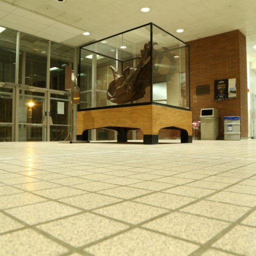
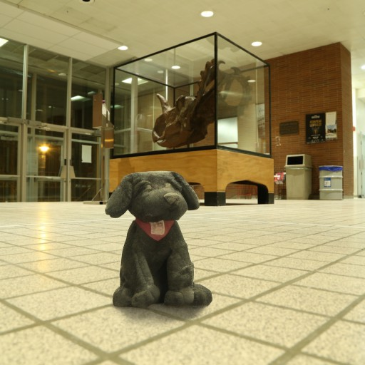
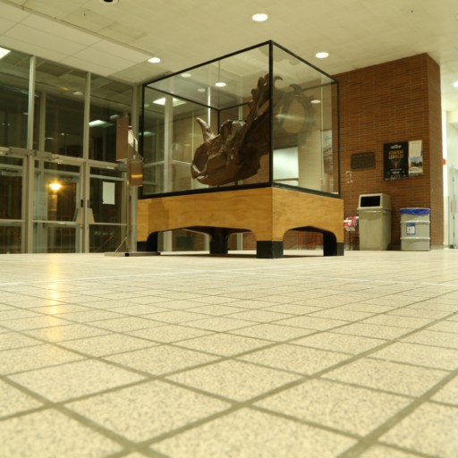
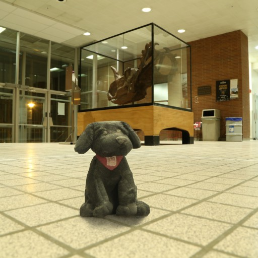

|
We present ZeroComp, an effective zero-shot 3D object compositing approach that does not require paired
composite-scene images during training. Our method leverages ControlNet to condition from intrinsic
images and combines it with a Stable Diffusion model to utilize its scene priors, together operating as
an effective rendering engine. During training, ZeroComp uses intrinsic images based on geometry,
albedo, and masked shading, all without the need for paired images of scenes with and without composite
objects. Once trained, it seamlessly integrates virtual 3D objects into scenes, adjusting shading to
create realistic composites. We developed a high-quality evaluation dataset and demonstrate that
ZeroComp outperforms methods using explicit lighting estimations and generative techniques in
quantitative and human perception benchmarks. Additionally, ZeroComp extends to real and outdoor image
compositing, even when trained solely on synthetic indoor data, showcasing its effectiveness in image
compositing.
|

 


